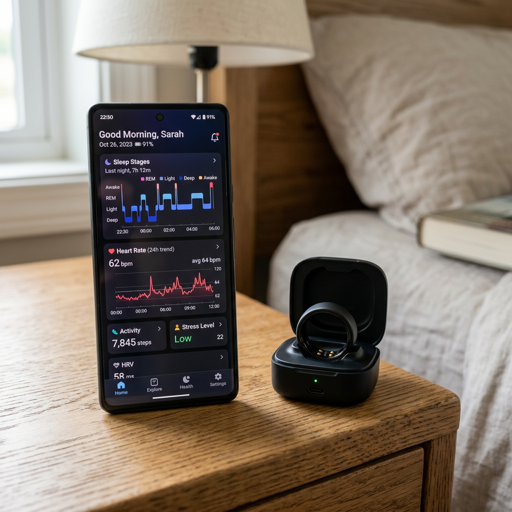

RingConn Gen 1 Review: The Ultimate No-Subscription Smart Ring for Precision Health Tracking
The Invisible Health Revolution: Why Your Smartwatch is Failing You
Are you tired of the bulky weight of a smartwatch on your wrist, the glowing screen distracting you at night, or the constant anxiety of a battery that dies mid-workout? For many high-performers, the quest for data often comes at the cost of comfort. You want medical-grade insights into your sleep, heart rate, and recovery, but you don't want a mini-computer strapped to your arm 24/7. This is the exact pain point the RingConn Gen 1 was designed to solve.
The RingConn Gen 1 isn't just another piece of jewelry; it is a sophisticated biometric sensor that sits discreetly on your finger. By capturing data from the thin skin and rich capillary beds of the finger, it provides a level of accuracy that wrist-based trackers often struggle to match. Below, we break down how the RingConn Gen 1 stacks up against the industry standard to help you decide if it's the right investment for your health.
| Feature | RingConn Gen 1 | Leading Competitors | Verdict |
|---|---|---|---|
| Monthly Subscription | $0 (Forever Free) | $5.99 - $9.99/mo | RingConn Wins |
| Battery Life | 7 Days + Portable Case | 4-5 Days | RingConn Wins |
| Material | Aerospace-grade Titanium | Varies (Plastic/Metal) | RingConn Wins |
| Data Depth | Comprehensive (Sleep, Stress, Heart) | Locked behind Paywall | RingConn Wins |
Why RingConn Gen 1 Dominates the Smart Ring Market
When searching for RingConn Gen 1 product info and reviews, one theme stands out: value. While other brands lure you in with a hardware purchase and then trap you in a perpetual subscription model, RingConn offers a breath of fresh air. You own your data, and you own the experience—no hidden fees, ever.
Design & Comfort: Forget You're Wearing It
Crafted from aerospace-grade titanium, the RingConn Gen 1 is remarkably light yet incredibly durable. Its ultra-slim profile and PVD coating make it scratch-resistant and comfortable for 24/7 wear. Unlike bulky watches, it doesn't interfere with your grip at the gym or feel restrictive during sleep.
Data Precision: Medical-Grade Insights at Your Fingertips
The RingConn Gen 1 utilizes advanced PPG sensors to monitor your vitals with staggering precision. It tracks your heart rate, blood oxygen levels (SpO2), and heart rate variability (HRV) around the clock. But where it truly shines is in its Sleep Monitoring capabilities. By analyzing your sleep stages (REM, Light, Deep) and skin temperature, it provides a comprehensive 'Sleep Score' that helps you optimize your recovery.
- Continuous HRV Tracking: Understand your nervous system's stress levels in real-time.
- Activity Monitoring: Automatically tracks steps, calories burned, and intensity.
- Stress Management: Visualizes your daily stress fluctuations to help you find balance.
The "No-Subscription" Advantage
In an era of "subscription fatigue," the RingConn Gen 1 is a unicorn. Most smart rings on the market require a monthly fee to access your own health data. With RingConn, every chart, every insight, and every firmware update is included in the initial price. Over three years, this saves you upwards of $300 compared to competitors—essentially making the ring pay for itself.

Real-World Performance & Battery Life
One of the biggest hurdles for wearables is the "charging chore." The RingConn Gen 1 solves this with a 7-day battery life on the ring itself. Furthermore, it comes with a portable charging case—much like high-end earbuds—that can recharge the ring up to 18 times. This means you can go months without ever needing to plug into a wall outlet, making it the perfect companion for travelers and busy professionals.
Final Verdict: Is RingConn Gen 1 Worth It?
If you are looking for a discreet, durable, and highly accurate health tracker that respects your wallet and your privacy, the answer is a resounding yes. The RingConn Gen 1 reviews from the community highlight its reliability and the liberating feeling of not being tethered to a monthly bill. It bridges the gap between professional health monitoring and everyday style.
Pros:
- No monthly subscription fees.
- Exceptional 7-day battery life with a portable charging case.
- Lightweight titanium construction.
- Detailed, easy-to-understand app interface.
Cons:
- Gen 1 lacks the ultra-thinness of the upcoming Gen 2 (but remains a top-tier value choice).
- Limited color options compared to fashion jewelry.
Stop guessing about your health and start measuring it with precision. Join thousands of users who have ditched the bulky watches for the streamlined power of RingConn.
Check Price on Official Store